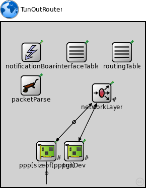
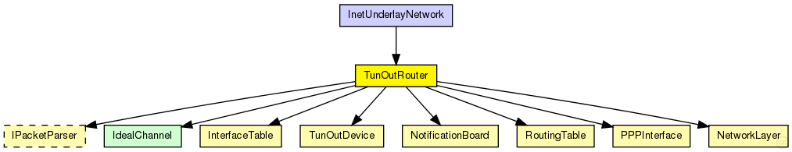
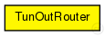

This documentation is released under the Creative Commons license
This documentation is released under the Creative Commons licenseTunOut router.
The following diagram shows usage relationships between types. Unresolved types are missing from the diagram. Click here to see the full picture.
The following diagram shows inheritance relationships for this type. Unresolved types are missing from the diagram. Click here to see the full picture.
| InetUnderlayNetwork (network) |
The InetUnderlay ned-file See also: InetUnderlayConfigurator |
| Name | Type | Default value | Description |
|---|---|---|---|
| parser | string |
name of the PacketParser to use |
|
| routingFile | string | "" |
| Name | Value | Description |
|---|---|---|
| node | ||
| display | i=misc/globe |
| Name | Direction | Size | Description |
|---|---|---|---|
| pppg [ ] | inout |
incoming gates to router |
| Name | Type | Default value | Description |
|---|---|---|---|
| networkLayer.ip.procDelay | double | 0s | |
| networkLayer.arp.retryTimeout | double | 1s |
number seconds ARP waits between retries to resolve an IP address |
| networkLayer.arp.retryCount | int | 3 |
number of times ARP will attempt to resolve an IP address |
| networkLayer.arp.cacheTimeout | double | 120s |
number seconds unused entries in the cache will time out |
| ppp.ppp.mtu | int | 4470 | |
| tunDev.mtu | int |
maximum transmission unit of the underlaying network |
// // \TunOut router. // module TunOutRouter { parameters: @node(); string parser; // name of the PacketParser to use string routingFile = default(""); @display("i=misc/globe"); gates: inout pppg[]; // incoming gates to router submodules: notificationBoard: NotificationBoard { parameters: @display("p=60,60"); } interfaceTable: InterfaceTable { parameters: @display("p=150,60"); } routingTable: RoutingTable { parameters: IPForward = true; // true if ip packets should be forwarded routerId = "auto"; // id of the router routingFile = routingFile; // use predefined routing file if given @display("p=240,60"); } packetParser: <parser> like IPacketParser { parameters: @display("p=59,126"); } networkLayer: NetworkLayer { parameters: @display("p=200,141;q=queue"); gates: ifIn[sizeof(pppg)+1]; ifOut[sizeof(pppg)+1]; } ppp[sizeof(pppg)]: PPPInterface { parameters: @display("p=90,257,row,110;q=l2queue"); } tunDev: TunOutDevice { parameters: @display("p=145,257,row,110;q=l2queue"); } connections allowunconnected: // connections to network outside for i=0..sizeof(pppg)-1 { pppg[i] <--> ppp[i].phys; ppp[i].netwOut --> networkLayer.ifIn[i]; ppp[i].netwIn <-- networkLayer.ifOut[i]; } tunDev.netwOut --> networkLayer.ifIn[sizeof(pppg)]; tunDev.netwIn <-- networkLayer.ifOut[sizeof(pppg)]; }
This documentation is released under the Creative Commons license